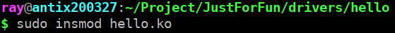
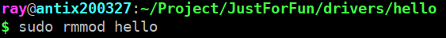
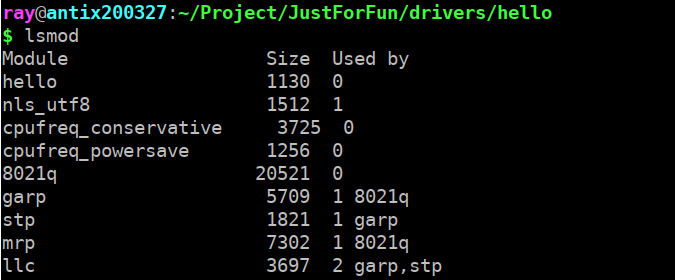
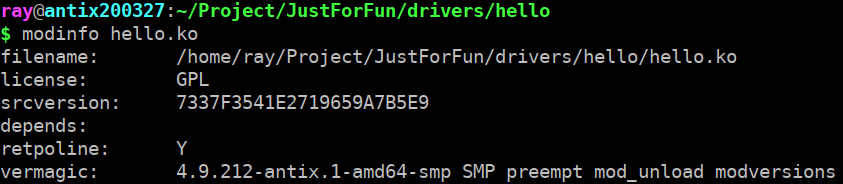
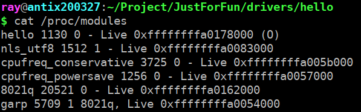
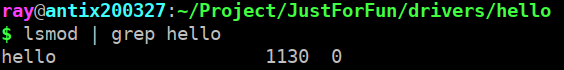
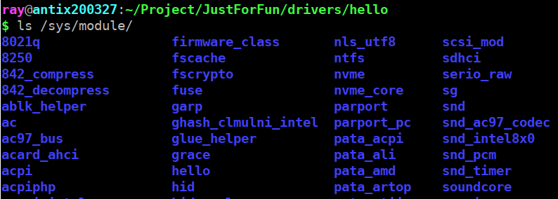
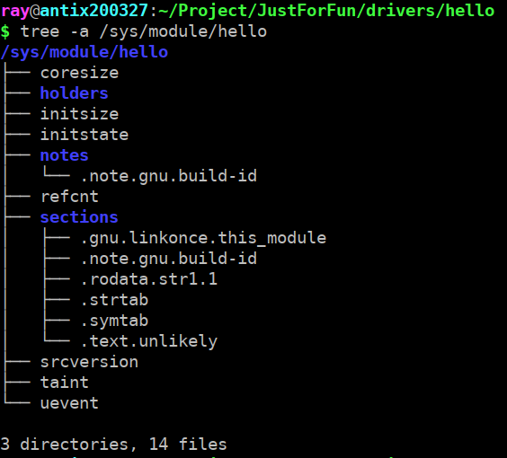

Linux為使用者提供了modutils工具,用來操作module(模組).這個工具包括以下指令:
使用insmod hello.ko來載入hello.ko模組
使用rmmod hello來卸載hello.ko模組
高級的載入和刪除module(模組)指令
列出已經載入的module(模組)和資訊
用於查詢module(模組)的相關資訊
通過指令cat /proc/moduels查看/proc/modules變化.
lsmod指令就是透過讀取/proc/modules列出核心當前已經載入的模組資訊
/proc/devices檔案沒有發生變化,因為hello.ko並不是一個裝置模組
/sys/module/目錄會增加一個hello目錄
hello目錄中包含了一些以層次結構組織的核心模組的屬性資訊.可透過tree -a /sys/module/hello指令來得到目錄結構
